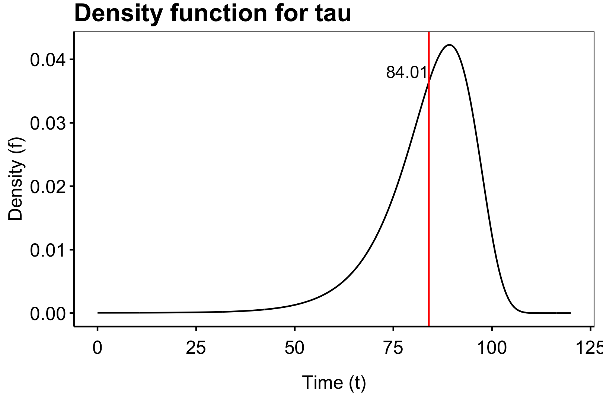

4.2 Phase-type distributions
In life insurance models we often, that is always, have a model with one absorbing state, namely, death. This means that the state space \(E\) will have the form of \(p\ge 1\) transient states (states that may interact in both ways) and one absorbing state (a state that is never moved away from). In this case we would often like to study the distribution of
\[ \inf\{t\ge 0 : X(t)=p+1\}, \]
where \(p+1\) is the absorbing state and \(1,...,p\) are the transient states. We will assume that \(P(X(0)=p+1)=0\) i.e. the above is at least zero and never \(-\infty\). Let us now formalise this setup.
Consider a time-inhomogeneous Markov jump process \(\{X_t\}_{t\ge 0}\) on the finite state-space \(E=\{1,...,p,p+1\}\) where the states \(1,...,p\) are transient states and \(p+1\) is the only absorbing state. This implies that the intesity matrix of \(\{X_t\}_{t\ge 0}\) take the form
\[ \Lambda(t)=\begin{bmatrix} \mathbf{T}(t) & \mathbf{t}(t)\\ \mathbf{0} & 0 \end{bmatrix}. \]
In the above \(\mathbf{T}(t)\) is a \(p\times p\) matrix function and \(\mathbf{t}(t)\) is a \(p\times 1\) matrix function. We now define the initial distribution of \(X_0\) as
\[ \{P(X_0=i)\}_{i\in E\setminus \{p+1\}}=\mathbf{\pi}=\begin{pmatrix}\pi_1\\ \vdots\\ \pi_p\end{pmatrix}^\top. \]
By assumption we have \(P(X_0=p+1)=0\) and so \(\sum_{i=1}^p\pi_i=1\) and \(\mathbf{\pi}\) is a proper distribution.
Definition 2.10. (Bladt) (Phase-Type distribution) Let
\[ \tau = \inf\{t\ge 0 : X(t)=p+1\} \]
denote the time until absorption of \(X\). The distribution of \(\tau\) is then said to be an inhomogeneous phase-type distribution with representation \((\mathbf{\pi},\mathbf{T}(t))\) and we write \(\tau \sim IPH(\mathbf{\pi},\mathbf{T}(t))\).
Lemma 2.11. (Bladt) We have the following decomposition:
\[ \mathbf{P}(s,t)=\prod_s^t(\mathbf{I}+\mathbf{\Lambda}(u)\ du)= \begin{bmatrix} \prod_s^t(\mathbf{I}+\mathbf{T}(u)\ du) & \mathbf{e} -\prod_s^t(\mathbf{I}+\mathbf{T}(u)\ du)\mathbf{e}\\ \mathbf{0} & 1 \end{bmatrix}, \]
where \(\mathbf{e}=(1,1,...,1)^\top\).
Theorem 2.12. (Bladt) Assume that \(\tau \sim IPH(\mathbf{\pi},\mathbf{T}(t))\). Then the density \(f\) and the distribution function \(F\) of \(\tau\) are given by \[\begin{align*} f(x)&=\mathbf{\pi}\prod_0^x(\mathbf{I}+\mathbf{T}(u)\ du)\mathbf{t}(x),\\ F(x)&=1-\mathbf{\pi}\prod_0^x(\mathbf{I}+\mathbf{T}(u)\ du)\mathbf{e}. \end{align*}\]
Proof.
Theorem 2.13. (Bladt) If \(\tau \sim IPH(\mathbf{\pi},\mathbf{T}(t))\) then
\[ P(\tau >s+t\ \vert\ \tau >s)=\frac{\mathbf{\pi}\prod_0^s(\mathbf{I}+\mathbf{T}(u)\ du)}{\mathbf{\pi}\prod_0^s(\mathbf{I}+\mathbf{T}(u)\ du)\mathbf{e}}\prod_s^t(\mathbf{I}+\mathbf{T}(u)\ du)\mathbf{e} \]
so that
\[ \tau-s\ \vert\ \{\tau>s\}\sim IPH(\mathbf{\alpha},\mathbf{S}(\cdot)), \]
where \(\mathbf{S}(u)=\mathbf{T}(s+u)\) and
\[ \mathbf{\alpha}=\frac{\mathbf{\pi}\prod_0^s(\mathbf{I}+\mathbf{T}(u)\ du)}{\mathbf{\pi}\prod_0^s(\mathbf{I}+\mathbf{T}(u)\ du)\mathbf{e}}. \]
Corollary 2.14. (Bladt) If \(\tau\sim IPH(\mathbf{\alpha},\mathbf{T}(t))\) and \(\mathbf{T}(t_1)\) and \(\mathbf{T}(t_2)\) commute for all \(t_1,t_2\ge 0\), then the density \(f\) and the distribution function \(F\) of \(\tau\) are given by \[\begin{align*} f(x)&=\mathbf{\pi}\exp\left(\int_0^x\mathbf{T}(u)\ du\right)\mathbf{t}(x),\\ F(x)&=1-\mathbf{\pi}\exp\left(\int_0^x\mathbf{T}(u)\ du\right)\mathbf{e}. \end{align*}\]
Example (Approximation in time-inhomogeneous case).
Consider the Markov jump process on the state space \(E=\{1,2,3\}\) where 1 is the state “alive” (working), 2 is “disabled” and 3 is the state “death”. We assume that \(\Lambda(t)\) has the structure: \[\begin{align*} \Lambda(t)&=\begin{bmatrix} \mu_{11}(t) & \mu_{12}(t) & \mu_{13}(t)\\ \mu_{21}(t) & \mu_{22}(t) & \mu_{23}(t)\\ \mu_{31}(t) & \mu_{32}(t) & \mu_{33}(t) \end{bmatrix}\\ &= \begin{bmatrix} -\mu_{12}(t)-\mu_{13}(t) & 0.000015 + 10^{(4.6-10+0.015\cdot t)} & 0.00005 + 10^{(4.6-10+0.05\cdot t)}\\ 0.000005 + 10^{(4.6-10+0.015\cdot t)} & -\mu_{21}(t)-\mu_{23}(t) & 0.0001 + 10^{(4.6-10+0.05\cdot t)}\\ 0 & 0 & 0 \end{bmatrix} \end{align*}\] We can now implement this intensity matrix as a function in R:
mu12 <- function(t) {
0.000015 + 10^(4.6-10+0.015*t)
}
mu13 <- function(t) {
0.00005 + 10^(4.6-10+0.05*t)
}
mu11 <- function(t) {
-mu12(t)-mu13(t)
}
mu21 <- function(t) {
0.000005 + 10^(4.6-10+0.015*t)
}
mu23 <- function(t) {
0.0001 + 10^(4.6-10+0.05*t)
}
mu22 <- function(t) {
-mu21(t)-mu23(t)
}
mu31 <- function(t) {0}
mu32 <- function(t) {0}
mu33 <- function(t) {0}
M <- function(t) {
matrix(
c(mu11(t),mu21(t),mu31(t),
mu12(t),mu22(t),mu32(t),
mu13(t),mu23(t),mu33(t)),
ncol = 3
)
}
M(0)## [,1] [,2] [,3]
## [1,] -7.296214e-05 1.898107e-05 5.398107e-05
## [2,] 8.981072e-06 -1.129621e-04 1.039811e-04
## [3,] 0.000000e+00 0.000000e+00 0.000000e+00We see that the intensities is choosen such that the following holds for any time interval \([t,t+dt)\)
- The transition \(1\to 3\) is less likely than \(2\to 3\),
- The transition \(2\to 1\) is less likely than \(1\to 2\),
- The transition \(1\to 2\) is less likely than \(1\to 3\).
We now wish to compute the density and distribution of
\[ \tau =\inf\{t\ge 0\ :\ X(t)=3\}. \]
We assume that \(\pi=(1,0)\) i.e. the person is alive. Calculating the distribution of \(\tau\) is then the distribution of the length of a newborn child lifespan. From theorem 2.12 this ammount to calculating the product integral of
\[ \mathbf{T}(t)=\{\mu_{ij}(t)\}_{i,j\in \{1,2\}} \]
i.e.
\[ \prod_0^x(\mathbf{I}+\mathbf{T}(u)\ du). \]
To du this we simply approximate with stepsize \(h=1/n\) (for some \(n\ge 1\)) by
\[ \prod_0^{x+h}(\mathbf{I}+\mathbf{T}(u)\ du)=h\prod_0^x(\mathbf{I}+\mathbf{T}(u)\ du)\mathbf{T}(x)+\prod_0^x(\mathbf{I}+\mathbf{T}(u)\ du), \]
and
\[ \prod_0^0(\mathbf{I}+\mathbf{T}(u)\ du)=\mathbf{I}. \]
This is done in the code below
n <- 12 #monthly
h <- 1/n
N <- 120 #max number years
T_matrix <- function(t) {
matrix(
c(mu11(t),mu21(t),
mu12(t),mu22(t)),
ncol = 2
)
}
T_matrix(0)## [,1] [,2]
## [1,] -7.296214e-05 1.898107e-05
## [2,] 8.981072e-06 -1.129621e-04t_matrix <- function(t) {
matrix(
c(mu13(t),mu23(t)),
ncol=1
)
}
t_matrix(0)## [,1]
## [1,] 5.398107e-05
## [2,] 1.039811e-04library(rlist)
#Initial condition t=0
T_product_integral <- list(diag(c(1,1)))
pi <- matrix(c(1,0),ncol = 1)
f <- t(pi) %*% diag(c(1,1)) %*% t_matrix(0)
F <- 1-t(pi) %*% diag(c(1,1)) %*% matrix(c(1,1),ncol = 1)
for (i in 1:(N*n)) {
x_1 <- i/n
x_0 <- (i-1)/n
T_0 <- T_matrix(x_0)
M_0 <- T_product_integral[[i]]
M_1 <- h*M_0 %*% T_0 + M_0
T_product_integral <- list.append(T_product_integral,M_1)
f <- c(f,t(pi) %*% M_1 %*% t_matrix(x_1))
F <- c(F,1-t(pi) %*% M_1 %*% matrix(c(1,1),ncol = 1))
}
We see that by calculating
\[ E[\tau\ \vert\ X_0=1]=\int_0^\infty \tau f(\tau)\ d\tau\approx\int_0^{120}\tau f(\tau)\ d\tau\approx\frac{1}{n}\sum_{i=0}^{120\cdot n} i/n\cdot f(i/n). \]
that the life expectation is 84.01 years. We have that we may approximate \(f\) and \(F\) with an arbitrary precision by choosing \(n\) appropriately. \(\square\)
I practice we may have alot complications in calculating the product integral of \(\mathbf T\) as the matrix may have large dimensions, be non-cummative, encounter alternating sums with growing terms and obviously being time in-homogeneous. So one has to be smart when constructing numerical methods in computing the integral. We will briefly consider some considerations an implementer may use in calculating the product integral.
- Applying differential equation. Assume that \(X\) is a time in-homogeneous markov jump process then we may always calculate \(\prod_s^t(\mathbf I + \mathbf T(x)\ dx)\) using a stepwise argument: \[ \prod_s^t(\mathbf I + \mathbf T(x)\ dx)=\prod_s^{s+1\cdot (t-s)/n}(\mathbf I + \mathbf T(x)\ dx)\prod_s^{s+2\cdot (t-s)/n}(\mathbf I + \mathbf T(x)\ dx)\cdots\prod_s^{t}(\mathbf I + \mathbf T(x)\ dx) \] for some \(n\ge 1\). In particular one can simply choose \(n\) large enough such that the increments is approximately linear and so this is a brute force methods (see example above).
- Piece wise constant matrix. Since data is scarce it often occur that mortality rates are constant over at least a monthly timeline hence one may assume that \(\Lambda\) is piecewise constant for some fine grid. This in particular means that if the grid has size \(1/n\) (for instance \(n=12\) or \(n=4\)) we have \[ \prod_s^{s+1/n}(\mathbf I + \mathbf T(x)\ dx)=\mathbf{I}e^{\mathbf{T}(s)\frac{1}{n}}=e^{\mathbf{T}(s)\frac{1}{n}}. \] and so the above reduces to \[ \prod_s^t(\mathbf I + \mathbf T(x)\ dx)=e^{\mathbf{T}(s)\frac{1}{n}}e^{\mathbf{T}(s+1/n)\frac{1}{n}}\cdots e^{\mathbf{T}(t-1/n)\frac{1}{n}}, \] assuming that \(s\) and \(t\) are integers (one could make this more general).
- Diagonalization. Assume that \(\mathbf{T}(x)\) is constant on some interval \([s,t]\) and that for the constant matrix \(\mathbf{T}:=\mathbf{T}(s)\) there exist unique eigenvalues \(\lambda_1,...,\lambda_p\). Then we can diagonalize \(\mathbf{T}\) as \[ \mathbf{T}=\mathbf{B}\mathbf{D}\mathbf{B}^{-1}, \] where as usual \(\mathbf{D}=\text{diag}(\lambda_1,...,\lambda_p)\) and \(\mathbf{B}\) is a \(p\times p\) matrix with columns of eigenvectors for \(\lambda_1,...,\lambda_p\). In this case we can calculate \[\begin{align*} \prod_s^t(\mathbf I + \mathbf T(x)\ dx)&=e^{\mathbf{T}(t-s)}=e^{\mathbf{B}\mathbf{D}\mathbf{B}^{-1}(t-s)}=\sum_{n=0}^\infty \frac{\left(\mathbf{B}\mathbf{D}\mathbf{B}^{-1}\right)^n(t-s)^n}{n!}\\ &=\sum_{n=0}^\infty \frac{\mathbf{B}\mathbf{D}\mathbf{B}^{-1}\mathbf{B}\mathbf{D}\mathbf{B}^{-1}\cdots \mathbf{B}\mathbf{D}\mathbf{B}^{-1}\mathbf{B}\mathbf{D}\mathbf{B}^{-1}(t-s)^n}{n!}\\ &=\sum_{n=0}^\infty \frac{\mathbf{B}\mathbf{D}^n\mathbf{B}^{-1}(t-s)^n}{n!}=\mathbf{B}\left(\sum_{n=0}^\infty \frac{\mathbf{D}^n(t-s)^n}{n!}\right)\mathbf{B}^{-1}\\ &=\mathbf{B}\left(\sum_{n=0}^\infty \frac{\text{diag}(\lambda_1^n(t-s)^n,...,\lambda_p^n(t-s)^n)}{n!}\right)\mathbf{B}^{-1}\\ &=\mathbf{B}\text{diag}\left(\sum_{n=0}^\infty \frac{\lambda_1^n(t-s)^n}{n!},...,\sum_{n=0}^\infty \frac{\lambda_p^n(t-s)^n}{n!}\right)\mathbf{B}^{-1}\\ &=\mathbf{B}\text{diag}\left(e^{\lambda_1(t-s)},...,e^{\lambda_p(t-s)}\right)\mathbf{B}^{-1}. \end{align*}\] which is much easier than any approximation. This is however a unrealisitic expectations to have.
- Univerformization. Assume that \(\mathbf{T}(x)\) is constant on some interval \([s,t]\) and define \(\mathbf{T}:=\mathbf{T}(s)\). We may furthermore define \(\lambda= \max_{i}(-\lambda_{ii})\) as the largest diagonal entry in \(\mathbf T\) (\(\lambda <0\)). We now set \[ \mathbf P = \mathbf I + \lambda^{-1}\mathbf T, \] and see that \(\mathbf P\) is a transition matrix i.e. rowsums is 1 and the the diagonals \(0\le p_{ii}\le 1\). We see this as \(0\le \lambda^{-1}\lambda_{ii}\le1\) as \(\lambda_{ii}\le 0\) for all \(i\) and \(\lambda\ge 0\) and dominates all diagonal entries. The rowsums is 1 as \(\mathbf T\) is a intensity matrix i.e. rowsums is 0 and so adding one to the diagonal of the scaled matrix gives a rowsum of 1. We can now rearrange and see that \[\begin{align*} \prod_s^t(\mathbf I + \mathbf T(x)\ dx)&=e^{\mathbf{T}(t-s)}=e^{\lambda (\mathbf P - \mathbf I)(t-s)}=e^{\lambda \mathbf P (t-s)}e^{-\lambda \mathbf I(t-s)}\\ &=e^{\lambda \mathbf P (t-s)}\mathbf Ie^{-\lambda (t-s)}=e^{-\lambda (t-s)}e^{\lambda \mathbf P (t-s)}\\ &=e^{-\lambda (t-s)}\sum_{n=0}^\infty \frac{(t-s)^n}{n!}\mathbf{P}^n. \end{align*}\] This is nice since \(\mathbf P\) has entries in the interval \([0,1]\) and so the series above converges and is monotonic, so we avoid the alternating sums from the negative diagonal in \(\mathbf T\).
- Scaling and squaring argument. Assuming the setup above. If the interval \((t-s)\) is large we may apply a scaling and squaring argument by setting \[ e^{\mathbf T(t-s)}=\mathbf{S}^{2^n},\hspace{15pt}\mathbf{S}=e^{\mathbf T (t-s)2^{-n}}. \] This ensures small entries in the matrix \(S\) and we can simply square \(\mathbf S\) \(n\) times after approximating \(\mathbf S\) numerically.